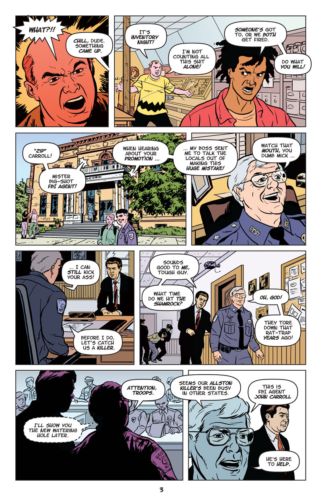
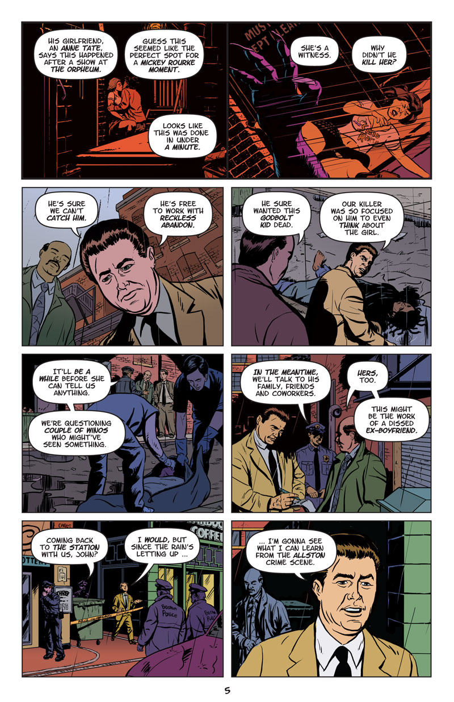
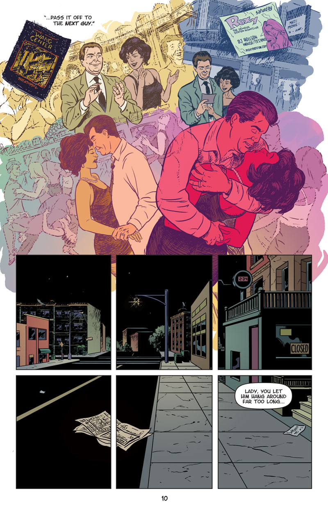

Zip’s Last Day
(R; Crime/Horror) A corrupt FBI agent arrives in Boston to solve what looks like a murder mystery. As he tracks down clues, the case evolves into something much more bizarre.
Zip’s Last Day: Page 1 of 16
About This Page
Expressing both flashback and current time in the same panel was a challenge! Making a prelude page would've been a lot easier, but would delay the main action. Obviously the flashback dialog had to be in some type of visual container. My first draft was an instant message/chat style, but that looked too modern for a couple of middle-aged Irish FBI agents. After lots of trial-and-error, I settled on the old-school typewriter design. Does it work?
With that settled, cramming in the autopsy reports, as well as a specific part of Commonwealth Avenue in Panel 3, was almost no effort at all.
"Don't let me see that naked on payday" is a line from the late, great comedian Robin Harris.
Zip’s Last Day: Page 2 of 16
About This Page
Background details come from combining current photo research with my own memories as a 17-year-old produce worker. Researched everything right down to the cash register. Time of day was important to keep track, which I've done with background details—lots of wall clocks.
Zip’s Last Day: Page 3 of 16

About This Page
The 4-row layout is proof positive the Stray Bullets influence. This forced me to focus on each panel's storytelling. Hopefully each setting is convincing. Wouldn't want the ghost of Alex Toth haunting my dreams.
The top scene resonated with a lot of my friends, all of whom were burned by selfish employess at the last second.
The police lieutenant is based on Dan DeCarlo.
I don't like the pointers of my word balloons very much. They're too uniform, without enough customization per panel. Most are short and curved, when a lot of them should be straight.
Zip’s Last Day: Page 4 of 16

About This Page
Splitting the two scenes on a single page is more convincing here than on page three. The solid blacks are my old-school attempt at page design/unification. It certainly makes my dense work a lot easier to read!
John Romita practically drew the bottom scene without knowing it. He brought subtlety to the art of using weather, both as a character and time-tracking element. I first noticed this in his 1977 Spider-Man newspaper strip.
Zip’s Last Day: Page 5 of 16

Zip’s Last Day: Page 6 of 16

About This Page
The classic Alan Moore/Harvey Kurtzman "close-up to flashback" technique. Established bond between young Zip and Whitey Sullivan/Bulger. I obsessed about nailing the 1970s Brighton Center neighborhood—looking at it now, it isn't as important as I thought it was.
Trying to emulate Artie Simiek's thought balloon style with a vector art application was time-consuming. I still think the thought balloon is a valuable tool, unique to comics, and should be used. Other artists, both new and old, tend to agree.
Zip’s Last Day: Page 7 of 16
About This Page
Ines is based on Rita Moreno, the only reason to watch West Side Story. I tried presenting her flirtation with Zip without words, through the store window. Does it work?
Zip’s Last Day: Page 8 of 16
About This Page
This page is directly inspired by Steve Ditko's 12-panel grid. It seemed the best way to display all this dialog on a single page. The characters speak in short call-and-response sentences, closer to real life. Cramming lots of words in single panels proved problematic. On the other hand, dividing the page into 12 equal-spaced sections shows character movement with subtlety and nuance.
Zip’s Last Day: Page 9 of 16
About This Page
Drawing Zip's hair was troublesome at first. I bought time by "pencilling" a few pages in advance. (See more detail about my digital comics technique.) The answer came by accident, while looking at Steve Ditko's Spider-Man. His taste in literature may be a little dopey, but once upon a time he was great at his day job. He communicated a lot of detail with deceptively simple inking. It's nice to discover the new problem you're working on was solved 40 years ago.
Zip’s Last Day: Page 10 of 16

About This Page
Designed as the left half of a double-page spread with Page 11. The contrasting rendering styles represent two different units of time; hopefully this is apparent. Once again, I obsessed about local background details (Wang Center and The Roxy, "Rock City" Allston MA) that you'd have to live here to get. Breaking the bottom panel into 6 sub-panels serves two purposes: (a) portraying 3:00 AM urban loneliness unique to Allston and (b) visual alignment with similar panels on the next page.
Zip’s Last Day: Page 11 of 16
About This Page
Designed as the right half of a double-page spread. 12 panels a page, camera zoom-in, visual storytelling ... blah blah blah. The middle panel - subdivided into 6 panels - took the most work and research. Ines living with room mates in Allston was essential to understanding her character. I needed to establish with visually, without words. The obvious method is bringing public items (TV, stereo, etc.) into the bedroom. The first draft looked like my old Allston bedrooms. A friend pointed out that it looked to "guy-like". This led to me interviewing female friends about how they decorate their bedrooms. Common elements were stuffed animals, candles and family photos. For this local focus group, "Puerto Rican Pooh" was a hit.
I robbed "...masturbate in my body" from my friend Karen Cali, who was complaining about one of her many admirers. When not shooting down losers with a dream, she's a amazing fine artist.
Oh yeah, I got to draw another boob grab.
Zip’s Last Day: Page 12 of 16
About This Page
The toughest part of this page was finding reference for Panel 2's FBI database web application, as it looked in 2001. I'm still proud of the storytelling and dialog on this page, but also embarrassed by the inconsistent drafting.
Zip’s Last Day: Page 13 of 16
Zip’s Last Day: Page 14 of 16
Zip’s Last Day: Page 15 of 16
About This Page
Chris doesn't notice the giant demon forming behind him. Does his tantrum hide the demon, or summon it?
Zip’s Last Day: Page 16 of 16
Previous
Next
Story Notes
This story came from a horrible first draft I wrote in 1988. "Life Ain't Nuthin' But Bitches and Money" was a half-hearted parody of Howard Chaykin's work. No one picked it up and I forgot all about 'til 2002 or so. Without its derivative elements, the story's essential themes are self-righteous rage, moral corruption, failure to communicate and the power of sex appeal.
This version was researched, written and drawn from the ground up. New research included FBI and Boston Police procedures, demonolgy and Boston-area history. FBI special agent John "Zip" Carroll is thinly based on John Connolly. The story is solidly set in Boston-area towns Brighton and Allston. The new script has improved dialogue, character motivations and scene descriptions, using time and weather as characters.
I abandoned my usual process of laying out the entire story in rigid thumbnail sketches. Using the approach used by R. Crumb, Jack Kirby and Jaime Hernandez, each page was built one at a time, from start to finish, with no regard for final page count. Another departure from my norm, each page is crammed with as much plot as possible. Visual influences include Steve Ditko's 9-panel grid layouts and David Lapham's retro-noir comic Stray Bullets.
"Zip’s Last Day" was produced completely digitally in 2003, advancing the techniques from "Six-Year-Old Horse Thief" and "Dead by the Pool". The color is brand new, continuing the momentum from "Plate Ground", "The Return" and "Six-Year-Old Horse Thief".
Tools and Materials
Dave M!, drivin' past the Stop 'n' Shop with my radio on.
Back to top
{kind=link}
{kind=link}